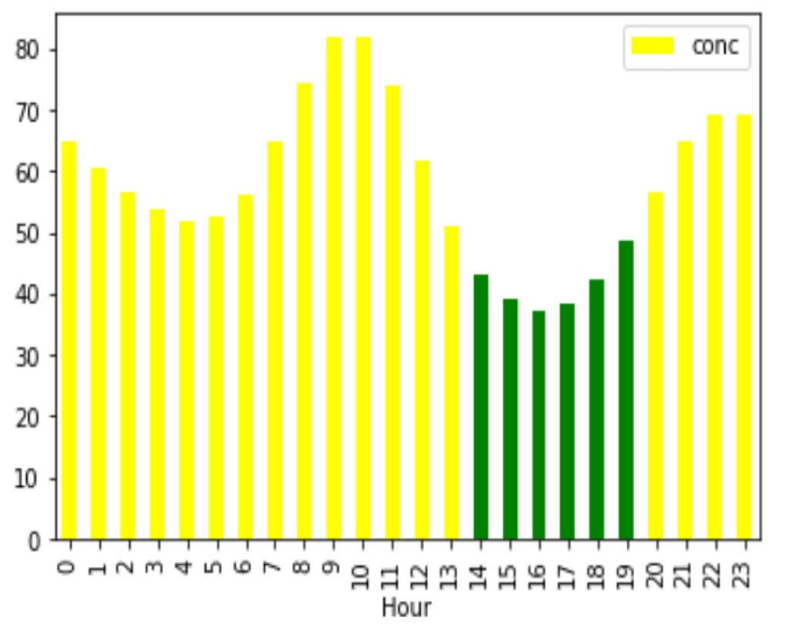
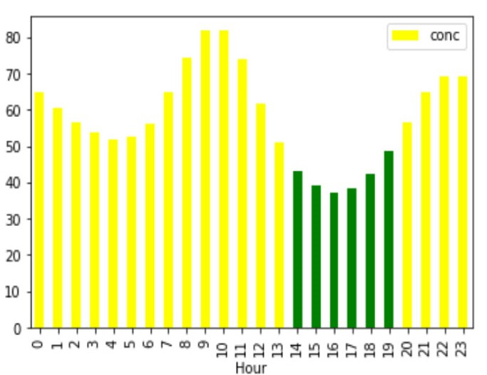

Kathmandu was recently ranked the third most polluted city in the world. How have pollution levels changed over the years, and what trends can we find? In the datasets below, the bars represent pollution levels; green is safe, yellow is mild, red is dangerous, and orange is highly dangerous.
For comparision, these are air pollutions level in 2017, the safest levels recorded in this dataset. Green means safe, yellow means moderate.


Air pollution levels by the hour
2017

2018

2019

Source: https://np.usembassy.gov/embassy/air-quality-monitor/
2017
2018
2019
Source: https://np.usembassy.gov/embassy/air-quality-monitor/
In all three years, we can see that air pollution levels are lowest from approximately 2 p.m. to 7 p.m., and highest around 10 a.m., however, the overall air pollution has increased over the years.